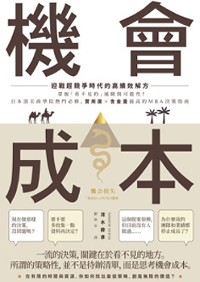

借閱、分享、拿 Line Points
每月每人最多可換取6組120點
活動辦法
閱讀兩本書 + 分享閱讀畫面，就可以獲得20點Line Points
每月限量200組西方殖民地官員第一手觀察，以獨到的觀點道出日本殖民統治臺灣的優缺點，...
本書是台灣安寧緩和醫療的第一手現場紀實報導。關於安寧緩和醫療，其實...
2050年日本預言書，2015年的東亞島國 如何在30多年後站上世界巔峰？...
本書以國族寓言貫串「台灣三部曲」，而每一部又以特定觀點來闡述該書特色...
難得一見的海南島二戰記事，文情並茂的文字搭配多張插畫和照片海南島的大...
印尼蘇哈托統治下的新秩序政府，藉由成立準政黨「戈爾卡」以操弄政治鞏固...
本書精選全台具特色且保留完好、有參觀價值的日式建築，從時代背景談起，...
文學文本的閱讀行為啟動後，一步步包圍讀者沉浸其中的『空間』，與夢境...
本書收錄超過100張世界臺灣古地圖，從地圖中抽絲剝繭，精采呈現12～18世紀...
被遮蔽的台灣人，你只有被遮蔽的國際觀！一百多張媲美《國家地理雜誌》的...

根據《財富》雜誌最新評選，在全球500大企業中，亞馬遜排名第18名是...

人工智慧所運用之智慧製造技術可說是下一世代技術發展之重點領域技術核心。...
與彼得‧杜拉克齊名的英國當代管理思想家韓第自傳，他要大家思考：你拿什麼...
孟加拉灣位於印度洋北部，為中東、南亞通往東南亞的要道，國家人口眾多，...
世界100強執行長郭台銘窮追夏普四年為哪樁？鴻海能否因而成為品牌公司？...
「新南向政策」是我國順應國內外情勢變化，對外經貿戰略的重要一環， 也是...

「那個傢伙為何做什麼都成功！？」大揭祕，單憑實力一決勝負的時代已經過去...
近畿大學從谷底翻身的奇蹟歷程，從商業人士到行政人員，都要知道的品牌...
當大數據、心理學成為武器，選民變成操弄工具，我們該如何抵擋民粹風暴的...
集結問題解決、經營管理、領導方針、策略概念，專為商務人士打造的決策...
貝多優是印尼中爪哇宮廷傳統文化中極富神聖儀式特質的舞蹈形式。它融合...
繼《來自土耳其的邀請函》吳鳳全新力作——獨家食譜初登場！不藏私傳授...
深入馬來西亞日常生活，感受多元文化的趣味，了解自身的文化，若要認識...
位於馬來半島最南端的新加坡，大約是2.5個台北市的大小，北邊與馬來西亞...
由旅日台灣女子建築師所撰寫、攝影的建築主題旅遊書籍，簡練的視角觀察與...

你知道，餐桌上的食物是從哪兒來的嗎？本書以不同角度切入，藉由餐桌上的...
《借鏡德國》一書作者再度執筆，從歐美經驗反觀台灣動物福利問題，並闡述...
附中美洲旅遊路線地圖，跟著Winny和York前往冒險去！不只紀行更有攻略，...
一段跨越一千五百哩的承諾，一家醫院與一個國家的動人友誼開創醫療外交...
全台賞鷹情報大公開，首推基隆港的老鷹嘉年華！懂老鷹、愛老鷹，就要知道...
台灣不是孤單的存在，她日日被溫暖的黑潮撫慰著，台灣不是孤懸之島，溫暖...
「世界列國誌」民國五十六年問世迄今，歷經二十九個寒暑；初生嬰兒呱呱墜地...
台北電影節第二屆「卓越貢獻奬」得主、新一代電影文化守護者《放映週報》，...
爬梳1986-89年間台灣小劇場的發展，詳盡介紹各個劇團的歷程與簡史。深度評...
本書聚焦於幾位最具影響力的台灣新電影導演如侯孝賢、楊德昌、蔡明亮...
現代性乃形塑二十世紀以來人類社會及文化最重要的力量之一。本書以「現代...
以喧騰一時的五齣在台灣劇場的表演為例，探討經典文本改編，以在地化的劇...
台灣電影有如一座海上寶島，蘊藏豐富寶藏亦如片長跨越百年的膠捲，用影像...
爬梳1986-89年間台灣小劇場的發展，詳盡介紹各個劇團的歷程與簡史。深度評...
台灣有小劇場嗎？他們是誰？在哪裡？做甚麼？做劇場可以維生嗎？如果賺不...
活動1
借閱、分享、拿 Line Points
每月每人最多可換取6組120點
活動辦法
閱讀兩本書 + 分享閱讀畫面，就可以獲得20點Line Points
每月限量200組
活動2
延伸閱讀，推薦姊妹書
活動辦法
推薦兩本符合主題的書，即可換取閱讀獎勵Line Points10點
每人每月最多可換取60點活動說明